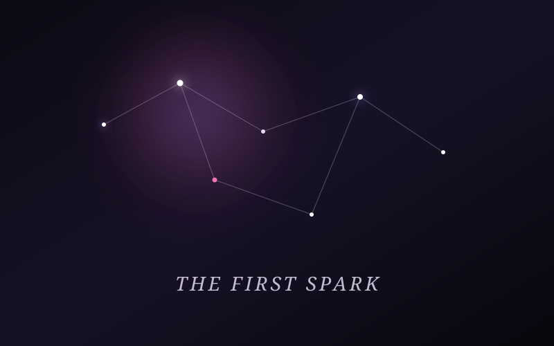

A quiet night, 2026
“Somewhere along the way, you became someone I wanted to know a little better.”
It started quietly — no fireworks, no dramatic signals. Just a subtle feeling that conversations with you had a different kind of warmth. A realization that among all the noise, your voice stood out.
